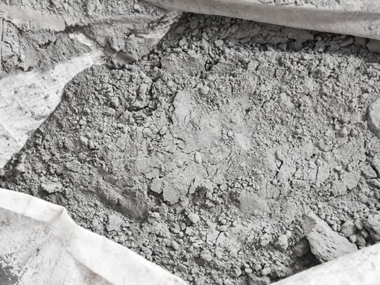
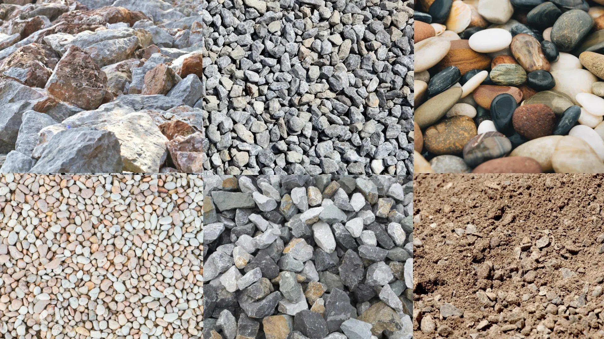
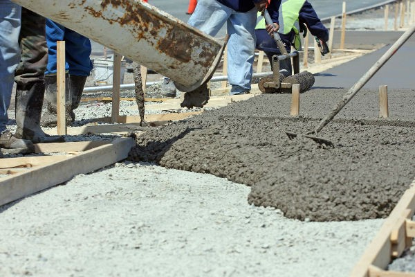

MERC is a building materials company that provides high quality products and reliable service to customers and communities throughout southeast asia. Our operations network produces, distributes, and markets cement, ready mix concrete, aggregates, and related building materials, and we maintain trade relationships in all nations in southeast asia.

CementCement is the primary raw material used in building and is made from a combination of limestone, clay, and iron ore. The mixture is heated to about 1,500 degrees Celsius to form clinker, which is then combined with gypsum and other components to form cement. MERC is one of the world's top cement makers and aggregate suppliers. |

AggregatesAggregates are made up of crushed stone, sand, and gravel. They are employed in almost every sort of building. Aggregates are not only an important component in the building and maintenance of roads, toads, and streets, but they are also an essential component in concrete. MERC is one of the world's largest aggregate providers. |

Ready-mix ConcreteReady-mix concrete is created from a combination of cement, aggregates, and water. It can take many different shapes. is extremely durable and offers several advantages for sustainable building. MERC is the world's largest provider of ready-mix concrete. |
Related items:We rely on our close relationships with our clients to provide them with complementary products for their construction needs, such as rods, blocks, concrete materials, and asphalt, as well as electrical supplies, paint, tile, and timber, among other faxtures. |
Email: MERCPHINQ@gmail.com
Contact Number: (02) 8746-5890
Our Location: NABAS, AKLAN, PHILIPPINES